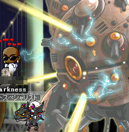

タイトルの通り、買いました。
Kensington(ケンジントン)のExpertMouse って奴です。
なんじゃこりゃ？って形してますけども、パームレストのせいです（
まー色んなレビューサイト調べていて、一番まともそうかなーと思ったので購入。
マウスにしろキーボードにしろ、なーんか「これぞ！」って奴が無かったんですねー。
キーボードなら、Ctrlキーの位置がおかしいとか、わけわからん場所にあったりとか。
マウスならば、ボタンがベッコンベッコン跳ね返ってくるシンドイタイプだったり
足元の本体にレシーバー差し込むと圏外だったり（！）
で、これまで色々買ったんですが、なんとかこれで落ち着きそうです。
あ、こりゃいいわー
いい買い物したー(´・∀・)
以下、素敵な点↓
1. 手首でぐりぐり動かす必要がなく、指先だけで直感的に動かせる。
2. ボールの横にあるスクロールリングが直感的で素敵。
3. 戻る/進む とかの第3,4ボタン以外はドライバ不要で使える。
4. っつーかWindows2000でも使える。
5. 長時間のゲーム作業でも手首が疲れない。
（だらだらと傾いたまま作業を続けられる）
6. 付属の専用ドライバMouseWork で異様に細かい設定が出来るので、
ちょっとだけ動かした時はどれぐらいの精度か、早く動かした時の加速度かとかが自由自在。
次、惜しい点
1. 本体値段が高い。(ヨドバシカメラで\12,500!)
2. 取り扱い店舗が極端に少ない。(ってか無い)
3. Amazon とかで注文した方が安くつく（
4. スクロールリングが微妙にチープ。（まあどうでもいいけど）
5. もう、普通のマウスに戻れないかもしれない不安と戻る気がしない恐怖（
こげなとこかのー(´・ω・)
後はキーボードをHappyHackingのProにしようかどうか迷い中。
迷うって事は買いたくないってこと。
ううむ
なんで、変換/無変換キーを付けるのかなぁ
自分の望むままのキーボードが欲しい。
まーとりあいず、キーボード/マウス探しはこれにて終了ですねー。
素敵PC環境完成っとｗ
凪さんをブスリッ
はいこんばんはー
びっくりするぐら更新滞っております。
わーびっくりした。
ドキーってなるわ。
えー、順調に大航海しております。
時々めいぽのリス海岸に打ち上げられたりしますが、どざえもんです。
どっちも大好きなので片手落ちにはならないですYO!
2009/12/15 に大規模アップデートで、El Orienteが実装されましてね
遂にジャパーン実装ですよ。
まあ、全然進行出来てないので長崎港に足を踏み入れるのは相当先になるでしょうがっ
16世紀っつったら
かつて全ヨーロッパを支配する大帝国、ローマ帝国が
北はイギリス、南はアフリカに及ぶ広大な地域を征して、やがて衰退を始めて（ｒｙ
世俗も相次ぐ戦乱に疲弊し、世界を統一するだけの力を持つ君主が現れないまま
教皇が清貧の理想よりも世俗支配に関心を持つ事で信仰は腐敗し、人々は精神的礎を失って
ヨーロッパは更に細かく分裂し、果て無き闘争を繰り返していく。
教皇、皇帝、そしてその座を狙う諸国の王侯貴族！
全てが野望をむき出しに争う中世、イタリアはそｎ（ｒｙ
あ、これ13世紀の話ですね（
で、あー
戦闘システムもすげー地味なものから一気にアクティブなものに変わりまして
商会（ギルド）の方達とピラミッド内部探索なんかやっちゃって！
うはーたのしー
うはーたーのすぃー
とにかく、その追加された新要素云々よりも
俺はこの一枚を掲載して、皆に見て欲しかったわけですよっ
それが更新意欲へのきっかけですよっ
見て見て！この冒険してる感！
ゴールデンウィーク突入！うらー！待ちに待った！
予定は？
勿論ツーリング！
どこ行くの？
種子島！
えええ！？遠いよ？
そうだね！
日程大丈夫なん？
ふはは。有給使って5/2 ～ 5/10 まで休みなのだ！
ええぇーすごいね。
おう、夢のローングバッケーションやｂ
もう、仕事辞めたら？
なんでやねん！
最近メイポの調子はどう？更新してないけど。
おう！Lv116 になったぜ！
 どーん
…なんかちがくね？
…俺もそう思う。
貴重なSSだね。
そうだね。
で、どこ行くんだっけ？
たったねがしま！
なんも無いらしいよ？
素敵やん(´・ω・)
変態だね。
今更知ったん？
バーカ
何とでも言え。
バーカバーカバーカ
誰が何度も言えと言った(#ﾟдﾟ)￢⌒)д`）~'; ﾊﾟｧﾝｯ
じゃあ帰ってくるのは9日か10日か。
そうなるね。種子島行きのフェリーとか、一日に一本とかやし。
ふーん
どしたん？
いや、ちょっとね。
んん？まあいいわい。うらー！楽しみだっぜ！！
歯を食いしばれー！
サー！イエッサー！
俺の質問には迅速に答えろ！
サー！イエッサー！
バイクは好きかー！？
サー！イエッサー！
旅は好きかー！？
サー！イエッサー！
お前は晴れ男かー！？
サー！イエッサー！
週間予報ではどうなっているー！？
一週間丸々晴れでありますサー！
この晴れ男めー！
サー！イエッサー！
では楽しんでくるんだな！
サー！イエッサー！
振り返るでないぞ！？
サー！イエッサー！
骨を向こうで埋める覚悟かー！？
サー！ノーサー！
お前はチキンだ！
サー！イエッサー！
お前は弱い！
サー！イエッサー！
その上臆病だー！
サー！イエッサー！
開けたら閉める！
サー！イエッサー！
もういいかー！？
サー！ノーサー！
サー！イエッサー！？
サー！イエッサー！！
アーラエッサッサー！？
サー！イエッサー！
GW期間中、経験値4倍キャンペーンをやるらしいぞ！？
サッ、、、サー！イエッサー！
振り返るな！！
サー！イエッサー！
楽しんで来い！
サー！モチロンサー！
行ってきます！
どうも、本気じるしの手羽君です。
えー、昨日はメイポへの接続時間が15時間でした（
やるとなったら、滅茶苦茶やります、こんな僕です。
Lv100にもなったし、元気良くメイポライフだーみたいな。
元気元気、元気になるには、、、
不浄なる者への天の裁きを！
どっかーん
次は、、、うむ。
おらおら羊共よ！毛を狩って刈ってくれるわっ！
で、おりゃー！LvUP－！
うるさん、今日もありがとうです。
ああ、もう、可愛いなあチクショウ。
ふぅ、次はっ、、、と( ﾟ∞ﾟ)
黙示さん！どっか連れてってください！とお願いして、
楓城の忍耐マップの先、忍頭MAPへ行ってきました。
黙示さんの戦いっぷりが、これまたかっこえーんだわ( ´;ﾟ ;ё;ﾟ ;)b
1時半間程一緒に狩ったんだっけな。
下段の忍頭は黙示さんに任せっきりにして、俺は上段の上忍のみを相手にするとゆーチキン狩り。
うぇうぇ( ´;ﾟ ;ё;ﾟ ;)
で、めでたくLvUP!
なんと、一日で2LvUPですわ。
恐ろしい子っ
あ、それと忍耐途中で、可愛い子を見つけました。
あ、みｓ ↓こっちですね。
忍耐で繋がるこころとこころ。
思いがけず、人気あげちゃいました(何
うーむ、まだ時間はある。
って事で、もぐさんとじうさんが乱入！
この狭い楓城内で大暴れするおふた方！
ジェネシスどかーん
紙飛行機びゅびゅびゅーん
俺は上忍チキン狩りがががー(何
あ、しまった（’’；
もぐさんなんて、忍頭にレイプされたし（’
や ら な い か ふぉおおーー
で、明け方6時頃、めでたくLvUP!
なんと、一日で3LvUPですわ( ´;ﾟ ;ё;ﾟ ;)
恐ろしい子っ
ギャボー
オワリ
予告どおり、さくてけを買ってきました。
うおーこれ使うの何年ぶりだろう。
EXP表示がッパネェッス！
昨日はひな祭りクエストの忍耐を、嫁と共に行いました。
半切れになりながらも、どーにかこーにかどーにかこーにか、クリア○|￣|＿
いらいらしてるのが丸わかりだったのか、うるさんがアドバイスをくれたりｗ
いやー、隠し事が下手っすわ
っつか、菱餅なんざいらんのじゃあああ
んっんん。
えー、もぐさんのハーピー狩りに飛び込み、経験値吸いまくりリーチャーを行ってきました。
も、なに？俺はアイテム回収係に徹しておりました。
どかーんどかーんどかーーん
すげぇ（’’;
助けて(何
30分で30%UP
1時間未満でEXP50%に到達。
コワイわぁｗ
その後はチャチャさんとダークモココとかを狩って、クエストを進めました。
ありがとうチャチャさん、俺はすごく助かった。
if (TEVA=get-KAKUZATOU)
then
give to you
else
houti
end-if.
(#ﾟдﾟ)￢⌒)д`）~'; ﾊﾟｧﾝｯ
で、あー
深夜2時ぐらいかな？フリマに立ち寄ったんですよ。
そったらトビアスさんとそのお友達が沢山寄り合って、お話をしておりました。
で、図々しくも俺は会話に参加し、まるで昔から知ってる仲の様にお話させていただきました（
その中でひとり、異様に気の合う。っつか波長の合う。っつかノリの良い方がおりまして。
周りのみんなは引き上げたっつーのに、ずーーっとお話しておりました。
彼女の名前は、綾乃エリザ。
頭がハンバーグという、素晴らしいセンスと髪型の持ち主(何
以下、会話ログ抜粋。
TEVA： ここが、モンマルトルの丘だったんですよ。
Eriza：パリジェンヌを眺めながら談笑していた日々
TEVA： エスプレッソをお願いしますシルブプレ、と言えていたあの頃
TEVA： …僕とお友達になりまセーヌ川
Eriza：喜んでオールボワール
- 登録完了 -
Eriza：宜しくお願いします、アモーレ
TEVA： 共にシンフォニーを奏でようぞセレナーデ
Eriza：そして広がるハーモニー、その音を聞いた群集はブラボーと
TEVA：全員総立ち鳴り止まぬ喝采
TEVA：そして怖じ気付く俺(何
も、こんなノリ大好きでね。
狩りよりもチャットのが優先順位が高い俺ですから。
も、たまんねっすよ先輩(誰
朝6時ぐらいかな。ごっちさんがINしてきまして、エリザさんの元に現れました。
ん？ごっちさん？
ああ！
以前ビシャスでご一緒したじゃねっすか！
んぎゃあーあ まさかエリザさんの相方だったとは！
ちょ！らっぶらぶ！
愛の波動にやられちまう！
キァー( ´;ﾟ ;ё;ﾟ ;)
キァー( ´;ﾟ ;ё;ﾟ ;) …あれ？(笑)
も、こんな楽しい時間ってのは、かけがえの無いもんですわね。
めいぽ初めてはや5年。(もうちょっとあったかな？忘れた)
いまだにこんな出会いがあるのは、たまらんですわ。
ほんまに
今日は記念日。
誰がなんと言おうと記念日です。
 どっせい
どっせい
どっこい
ふんぬら
ヴァー ばー！！
おりゃーー！めいぽ暦5年(ぐらいかな)にして、初のLv100到達じゃーいヾ( ´;ﾟ ;ё;ﾟ ;)ノ
やっぱ締めはナイトの故郷、イエペペで決まりっしょおおお！！
うひょぁあーヾ(´∀`)ﾉ
やー長い旅路だった。
俺がここまで来れたのは、間違いなく皆さんのおかげです。
みんながいるから、俺はここまで来れたんです。
一人じゃ、絶対に無理でした（ぁ
ほんとに、ありがとう。
心から、感謝してます(/_;)
にぎやかにチャットしながらも、時に激しく、時に女々しく(何
色々な事がありました。
思い出が走馬灯のように駆け巡ります（やばい
さて、マイペースでやってきた俺も、そろそろヒーロー目指してがむばりますかねっ
来週からはサクチケ買って
「随分頑張って斧を振りまくり、さくさくとクエストをやってレベルを上げていくTEVA」
略して「さくてば」 として、いきますかねっ！
さあ、これからが楽しみだ。
うぇっへっへっへ
いつもくだらないものを唐突に買い込みます、どうもTEVAです。
えー、今日は以下の2点をば。
①
②
① について。
えー、こいつはBluetoothヘッドセットですね。
ヘッドセットと言えど、サイズは補聴器ぐらいのミニマムサイズ。
レシーバもUSB穴に差し込むと、出っ張り部分がほとんど隠れてしまいます。
や、最近よくSkypeをするんですよ。
で、その時にケーブルがだらだら長いのも不便だなーってことで、購入に踏み切ったわけですね。
噂の青歯はどんなもんかなーと、お試しも兼ねて。
実際のところ、どうなのかってーと、、、
まー結論から言えば、使い物にならなかったっす(´・ω・)
なんでかってーと
俺のノートPCは無線LANで接続する様にしてあるんですね。
だから軽くバッティングしてるんかな？結構ノイズが入ります。
うーん、相手の声も俺の声も結構小さく聞こえるし、、、
ちょっと後悔していたり○|￣|＿
Bluetooth対応の機器を買ったのはこれが初めてですので、不慣れな部分も多いです。
俺、こう見えても割とアナログ人間で、どうしても無線っつーのに不安を感じてしまいます。
時計はデジタル表示でなく、アナログ表示が好きですしね。
まー暫くは様子見ですね。
罪深きこの者に断罪を下すのは時期尚早な気がします。
でと、②は何かってーと、モンスターハンターの新しい飛龍みたいですね。
ほんとはリオレウスが欲しかったんですけど、実際にモノを見てみると、、、
意外としょぼかったりして。
それならば、なんかかっこよさげな写真の方にしようかなーなんて。
フィギュアなんて集めてもしゃーないんですけどね（’
んー、微妙な買い物だった。
次は何を買おうかな。
ウホッいいおとこ！ のこうげき！
うるるこは2480のダメージを受けた！
うるるこは体力を最大まで回復ｓ
ウホッいいおとこ！ のこうげき！
うるるこは力尽きた(何
どうもこんばんは、すっごい怠け者のTEVAです。
すっかり更新怠けてしまって、はや1年。
ここに来てまさかの復活です。
近況としましては、私、お仕事がむばっております。
それなりに。
うん、やっぱり勉強が足らんね。
めいぽやってる場合じゃないね！
めいぽって楽しいねっ！！（
 あっはっは！
あっはっは！
どうもアタリマンです。
最近の俺はアタリマンです。
もぐさんから戴いた、アッパレな男です。
おめでたい男です。
えー、相変わらず遊んでばっかです。
こんな日々が大切だと、思うんです。

そうそう、こんなもん作ってみました。
あったらいいな、がきっとある。
どうもMaple馴れ合い場です(何
また一つ、、、くだらないモノを作ってしまった、、、(´・ω・)
ｵﾜﾙ


{kind=link}